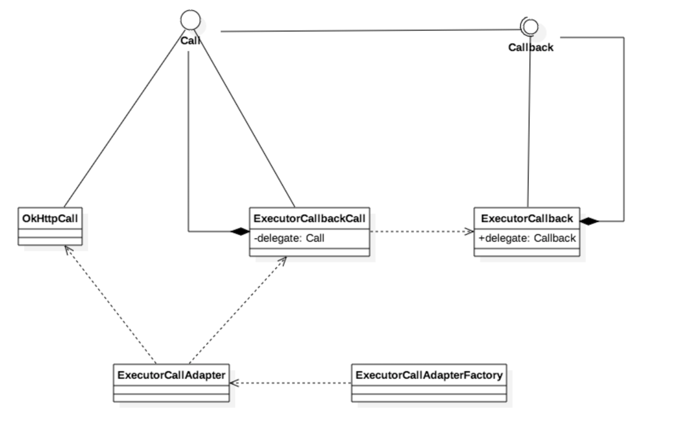

retrofit源码解析1
简介
Retrofit 通过使用方法上的『注解』来定义请求的构成，将我们声明的 Http 接口转化成一个 Call 对象。
这个 Call 对象呢，可以调用同步或非同步方法来发送请求，之后就交给 OkHttp 去执行。
关键类
Retrofit
最重要的一个类，直接暴露给用户，我们在使用时通常是使用 build 方法构造一个retrofit。
成员变量：
- baseUrl: Http 请求的基础 url，类型是 BaseUrl，包含了 url 函数返回 HttpUrl（OkHttp 的类），由 Retrofit.Builder.baseUrl 设置。
- client：OkHttp 库的 OkHttpClient 类型。由 Builder 的 client 函数设置，默认为OkHttpClient()。
- methodHandlerCache：Map 类型，MethodHandler 的缓存，从接口中解析出来，放在这个 map 里面。
- converterFactories：List 类型，包含了很多 converter 的创建工厂，用户可以通过 Builder 的 addConverterFactory 来添加。默认添加了 BuiltInConverters。
- callbackExecutor：回调函数的执行器，也就是回调函数执行的线程，Android 中默认为 MainThreadExecutor。
- adapterFactories：List 类型，包含了 CallAdapter.Factory，用户可以通过 Builder 的 addCallAdapterFactory 来添加。Android 中默认添加了 ExecutorCallAdapterFactory。使用 callbackExecutor 作为 Executor。
- validateEagerly：这个是设置的在创建动态代理对象之前，是否提前解析接口 Method，创建 MethodHandler 并添加到 Cache 中。
重要方法
- create(final Class service):T 这个是一个 public 模版方法，用户可以通过这个方法，传入接口 Class（T），获得接口 Class Http 请求的动态代理对象。这是该开源库的主入口，这个函数先验证接口以及其方法，然后创建一个匿名 InvocationHandler，在匿名 InvocationHandler 的 invoke 中首先去掉 Object 以及 Platform 默认的方法，然后调用** loadMethodHandler 解析对应的方法**（接口方法），创建 MethodHandler 加入到 methodHandlerCache 中，得到 MethodHandler，最后调用 MethodHandler 的 invoke 方法得到返回结果（接口方法的返回类型）。动态代理请见Java 动态代理
- loadMethodHandler(Method method):MethodHandler<?> 解析对应的方法（接口方法），创建 MethodHandler 加入到 methodHandlerCache 中，返回得到 MethodHandler。
- nextCallAdapter(CallAdapter.Factory skipPast, Type returnType, Annotation[] annotations):CallAdapter<?> 该方法主要是从 callAdapterFactories 中获取新的 CallAdapter，它会跳过 skipPast，以及 skipPast 之前的 Factory，然后找到与 returnType 和 annotations 都匹配的 CallAdapterFactory。如果不匹配 CallAdapterFactory 的 get 会返回 null，所以搜索 Factories 的时候，直到搜索到返回非 null 就找到对应的了。如果没有找到对应的 CallAdapterFactories，得到 CallAdapter，则该方法会抛出一个 IllegalArgumentException 异常，异常里面的 message 会是"Could not locate call adapter for "，如果遇到这个异常，则去判断对应的方法的返回类型是不是与 CallAdapterFactory 不匹配。
- requestBodyConverter(Type type, Annotation[] annotations):Converter 也是模版方法，该方法返回 Converter。利用 converterFactories 创建一个与 RequestBody 对应的 Converter 对象。 如果没有找到对应的 ConverterFactory，得到 Converter，则该方法会抛出一个 IllegalArgumentException 异常，异常里面的 message 会是"Could not locate RequestBody converter for "。同样，如果遇到这个异常，则去判断对应的方法的返回类型是不是与 ConverterFactory 不匹配。
- responseBodyConverter(Type type, Annotation[] annotations): Converter 与 requestBodyConverter 类似，不过该方法对应的是 Response。
MethodHandler
MethodHandler 是 retrofit 中连接了解析部分，执行部分，转换部分的一个关键的中间类。不过 MethodHandler 的代码量很少。它可以说是连接各个部分的桥梁，也是接口方法的描述类。它有包含了 retrofit，requestFactory，callAdapter，responseConverter 成员变量。主要方法如下
- create(Retrofit retrofit, Method method):MethodHandler<?> 这是个静态方法。MethodHandler 的创建方法，在这个方法里面通过创建 CallAdapter，responseConverter，requestFactory，最后创建 MethodHandler。
- createCallAdapter(Method method, Retrofit retrofit): CallAdapter<?> 这是个静态方法。通过 retrofit 的 newCallAdapter 创建 CallAdapter
- createResponseConverter(Method method,Retrofit retrofit, Type responseType):Converter 这是个静态方法。通过 retrofit 的 responseConverter 方法得到 responseConverter
- invoke(Object... args):Object 通过 callAdapter 的 adapter 将 OkHttpCall 转换成需要返回的 Call
Converter
接口主要定义了三个方法
//// 返回将 ResponseBody 转化为 Type 具体的对象的 Converter
public Converter<ResponseBody, ?> responseBodyConverter(Type type, Annotation[] annotations,
Retrofit retrofit) {
return null;
}
//返回将函数 Body 参数转化为 RequestBody 的 Converter
public Converter<?, RequestBody> requestBodyConverter(Type type,
Annotation[] parameterAnnotations, Annotation[] methodAnnotations, Retrofit retrofit) {
return null;
}
public Converter<?, String> stringConverter(Type type, Annotation[] annotations,
Retrofit retrofit) {
return null;
}
具体实现有 BuiltInConverters、GsonConverterFactory
看看GsonConverterFactory如何复写这几个方法的
@Override
public Converter<ResponseBody, ?> responseBodyConverter(Type type, Annotation[] annotations,
Retrofit retrofit) {
TypeAdapter<?> adapter = gson.getAdapter(TypeToken.get(type));
return new GsonResponseBodyConverter<>(adapter);
}
@Override
public Converter<?, RequestBody> requestBodyConverter(Type type,
Annotation[] parameterAnnotations, Annotation[] methodAnnotations, Retrofit retrofit) {
TypeAdapter<?> adapter = gson.getAdapter(TypeToken.get(type));
return new GsonRequestBodyConverter<>(gson, adapter);
}
在responseBodyConverter（）中直接返回了一个GsonRequestBodyConverter
final class GsonResponseBodyConverter<T> implements Converter<ResponseBody, T> {
private final TypeAdapter<T> adapter;
GsonResponseBodyConverter(TypeAdapter<T> adapter) {
this.adapter = adapter;
}
@Override public T convert(ResponseBody value) throws IOException {
try {
return adapter.fromJson(value.charStream());
} finally {
value.close();
}
}
}
- responseBodyConverter – 将服务器返回的数据转化ResponseBody。可以理解为数据解析的转换器
- requestBodyConverter – 将GitHubService.listRepos()中的Body，Part和PartMap注解转换为RequestBody(OkHttp3)，以便http请求的时候使用。
- stringConverter – 将Field，FieldMap 值，Header，Path，Query,和QueryMap值转化为String，以便http请求的时候使用。
在GsonResponseBodyConverter 的convert方法中直接用 gson 解析JSON 返回一个javabean，这个就是我某地回调中拿到的数据
在requestBodyConverter直接返回了GsonRequestBodyConverter
final class GsonRequestBodyConverter<T> implements Converter<T, RequestBody> {
private static final MediaType MEDIA_TYPE = MediaType.parse("application/json; charset=UTF-8");
private static final Charset UTF_8 = Charset.forName("UTF-8");
private final Gson gson;
private final TypeAdapter<T> adapter;
GsonRequestBodyConverter(Gson gson, TypeAdapter<T> adapter) {
this.gson = gson;
this.adapter = adapter;
}
@Override public RequestBody convert(T value) throws IOException {
Buffer buffer = new Buffer();
Writer writer = new OutputStreamWriter(buffer.outputStream(), UTF_8);
JsonWriter jsonWriter = gson.newJsonWriter(writer);
adapter.write(jsonWriter, value);
jsonWriter.close();
return RequestBody.create(MEDIA_TYPE, buffer.readByteString());
}
}
Call
这是 Retrofit 的框架基础接口。它是 Retrofit 的发送请求给服务器并且返回响应体的调用。每个 Call 都有自己的 HTTP 请求和相匹配的响应。 它有如下四个接口：
- execute 同步执行请求 Response
execute() throws IOException; - enquene 异步执行请求，并且使用 Callback 作为请求结束后的回调。 void enqueue(Callback
callback); - cancel 取消请求 void cancel();
- clone 复制请求，如果需要很多相同的 Call，可以通过 clone 复制。 Call
clone();
OkHttpCall是默认的实现
- createRawCall 根据
requestFactory和args创建一个okhttp3.Call call - parseResponse 解析 okhttp.Response
OkHttpCall 是将 Request 放入到 okhttp 的 Call 里面执行，执行完成后，又将 okhttp 的 Call 返回的 Response 转化为 retrofit 的 Response，在此同时将 Body 里面的内容，通过 converter 转化为对应的对象。
RequestBuilder & RequestFactoryParser
- RequestBuilder 这是一个 okhttp.Request 的创建类。负责设置 HTTP 请求的相关信息，创建 Request
- RequestFactoryParser 根据注解生成
RequestFactory，再由RequestFactory生成RequestBuilderK
static MethodHandler create(Retrofit retrofit, Method method) {
CallAdapter<?> callAdapter = createCallAdapter(method, retrofit);
Type responseType = callAdapter.responseType();
if (responseType == Response.class || responseType == okhttp3.Response.class) {
throw Utils.methodError(method, "'"
+ Types.getRawType(responseType).getName()
+ "' is not a valid response body type. Did you mean ResponseBody?");
}
Converter<ResponseBody, ?> responseConverter =
createResponseConverter(method, retrofit, responseType);
RequestFactory requestFactory = RequestFactoryParser.parse(method, responseType, retrofit);
return new MethodHandler(retrofit.callFactory(), requestFactory, callAdapter,
responseConverter);
}
CallAdapter
这是 Retrofit 的框架基础接口。CallAdapter 是将一个 Call 适配给另外一个 Call 的适配器接口。它有以下两个接口：
- responseType 返回请求后，转化的参数 Type 类型。 Type responseType();
- adapt 适配，将一个 Call 转换成另外一个 Call。
T adapt(Call call);
CallAdapter中还包含了一个工厂
abstract class Factory {
/**
* Returns a call adapter for interface methods that return {@code returnType}, or null if it
* cannot be handled by this factory.
*/
public abstract CallAdapter<?> get(Type returnType, Annotation[] annotations,
Retrofit retrofit);
/**
* Extract the upper bound of the generic parameter at {@code index} from {@code type}. For
* example, index 1 of {@code Map<String, ? extends Runnable>} returns {@code Runnable}.
*/
protected static Type getParameterUpperBound(int index, ParameterizedType type) {
return Utils.getParameterUpperBound(index, type);
}
/**
* Extract the raw class type from {@code type}. For example, the type representing
* {@code List<? extends Runnable>} returns {@code List.class}.
*/
protected static Class<?> getRawType(Type type) {
return Types.getRawType(type);
}
}
callbackExecutor
callbackExecutor 是 Callback 调用中用于执行 Callback 的 线程池。
如果不自行设置的话，会根据平台设置一个默认的 Executor
Platform
他有三个实现类：Android，Java8，IOS。分别设置了各个平台下的一些默认参数
在创建 Retrofit.creat 时会获取并设置当前环境的 Platform：
public <T> T create(final Class<T> service) {
Utils.validateServiceInterface(service);
if (validateEagerly) {
eagerlyValidateMethods(service);
}
return (T) Proxy.newProxyInstance(service.getClassLoader(), new Class<?>[] { service },
new InvocationHandler() {
private final Platform platform = Platform.get();
@Override public Object invoke(Object proxy, Method method, Object... args)
throws Throwable {
// If the method is a method from Object then defer to normal invocation.
if (method.getDeclaringClass() == Object.class) {
return method.invoke(this, args);
}
if (platform.isDefaultMethod(method)) {
return platform.invokeDefaultMethod(method, service, proxy, args);
}
return loadMethodHandler(method).invoke(args);
}
});
}
通过 Platform.get()得到对应的 platform
继续看一看 Android 平台的platform的实现
static class Android extends Platform {
@Override CallAdapter.Factory defaultCallAdapterFactory(Executor callbackExecutor) {
if (callbackExecutor == null) {
callbackExecutor = new MainThreadExecutor();
}
return new ExecutorCallAdapterFactory(callbackExecutor);
}
static class MainThreadExecutor implements Executor {
private final Handler handler = new Handler(Looper.getMainLooper());
@Override public void execute(Runnable r) {
handler.post(r);
}
}
}
- 这里获取了主线程的 Looper 并构造了一个 主线程的 Handler，于是在 Android 平台，调用 Callback 时会将该请求 post 到主线程上去执行。
- 将这个
Excuter作为一个构造参数，构造了一个ExecutorCallAdapterFactory并返回
注解类
在 Retrofit 里面创建了 Body 注解，Filed 注解（Field，FieldMap），请求方法注解（DELETE，GET，PATCH，POST，PUT），请求头注解（HEAD，Header，Headers），multipart 注解（Part，Multipart，PartMap），接口加码（FormUrlEncoded），Url，Streaming，查询（Query，QueryMap），参数路径（Path），HTTP
CallAdapter
对于 Retrofit 项目中 CallAdapter 用着适配器模式也挺巧的，通过适配器将 Callback 回调接口运行在 UI 线程。下面时有关 CallAdapter，Call，Callback 的类图，其中也是连续用了两次代理模式。

ExecutorCallback 代理的是用户自定义的 Callback。通过这种方式让 OkHttpCall 去执行 Call，让 ExecutorCallback 将用户自定义的 Callback 运行在指定线程上。
总结
- Call(接口)–向服务器发送请求并返回响应的调用
- CallAdapter(接口)–Call的适配器，用来包装转换Call
- CallBack(接口)–顾名思义Call的回调,Call执行时的回调
- Converter(接口)–数据转换器，将一个对象转化另外一个对象
- CallAdapter.Factory(接口)–CallAdapter的工厂，通过get方法获取CallAdapter
- Converter.Factory(抽象类) – 数据转换器Converter的工厂
responseBodyConverter – 将服务器返回的数据转化ResponseBody。可以理解为数据解析的转换器
requestBodyConverter – 将GitHubService.listRepos()中的Body，Part和PartMap注解转换为RequestBody(OkHttp3)，以便http请求的时候使用。
stringConverter – 将Field，FieldMap 值，Header，Path，Query,和QueryMap值转化为String，以便http请求的时候使用。 - MethodHandler – 处理、执行GitHubService方法的类
- RequestFactory – 创建OkHttp请求的Request
- RequestFactoryParser – 解析GitHubService.listRepos()方法的注解和参数，生成RequestFactory。（会用到requestBodyConverter，stringConverter）
- OkHttpCall – 实现Call接口，获取传入的Call（代理Call，通过Retrofit.callFactory生成的）执行请求，获取数据并使用responseConverter进行解析。
## 参考
> http://blog.qiji.tech/archives/9546
> http://www.jianshu.com/p/07dac989272c
> https://mp.weixin.qq.com/s?__biz=MzA3NTYzODYzMg==&mid=2653577186&idx=1&sn=1a5f6369faeb22b4b68ea39f25020d28&scene=0&key=f5c31ae61525f82eff1e94d54c4abd1c47958e9f7fe5751f2d201958841a354f0423e4ce98cb895058808f330921bde6&ascene=0&uin=MTYzMjY2MTE1&devicetype=iMac+MacBookPro10%2C1+OSX+OSX+10.11.4+build(15E65)&version=11020201&pass_ticket=rsJxex9Bn1eN7iJgW6FUI2KG3V9O6e3TH42j1U%2Fy5SU%3D
> https://github.com/android-cn/android-open-project-analysis/tree/master/tool-lib/network/retrofit
> http://www.tuicool.com/articles/UryUnyF
> http://www.jianshu.com/p/c1a3a881a144